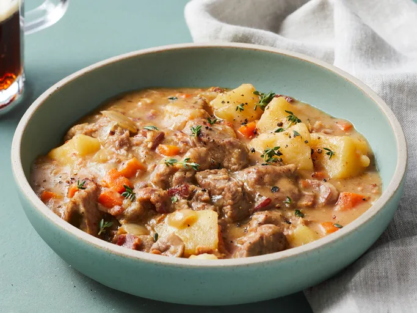

If you’re looking for a bowl of pure comfort, this is it. It’s a
straightforward, no-fuss recipe that lets the lamb and root veggies do
the heavy lifting, resulting in a thick, savory gravy that’s basically a
hug in a bowl. Perfect for a rainy Sunday or when you just want your
kitchen to smell amazing for a few hours.

Ingredients
- 1 ½ pounds thickly sliced bacon, diced
- 6 pounds boneless lamb shoulder, cut into 2-inch pieces
- ½ cup all-purpose flour
- ½ teaspoon salt
- ½ teaspoon ground black pepper
- 1 large onion, chopped
- 3 cloves garlic, minced
- ½ cup water
- 4 cups beef stock
- 2 teaspoons white sugar
- 4 cups diced carrots
- 3 potatoes, peeled and cubed
- 2 large onions, cut into bite-size pieces
- 1 cup white wine
- 1 teaspoon dried thyme
- 2 bay leaves
Steps
- Gather all ingredients.
-
Place bacon in a large skillet and cook over medium-high heat,
stirring occasionally, until evenly browned, about 10 minutes. Use a
slotted spoon to transfer bacon to a paper towel-lined plate to drain.
Reserve bacon fat in the skillet.
-
Place lamb, flour, salt, and pepper in a large mixing bowl; toss to
coat evenly. Brown lamb in bacon fat in the skillet over medium-high
heat. Transfer browned meat into a stockpot, leaving 1/4 cup of fat in
the skillet.
-
Cook onion and garlic in reserved fat in the skillet over medium heat
until onion is golden.
-
Deglaze the skillet with water, then pour onion mixture into a Dutch
oven or stockpot. Add bacon, beef stock, and sugar to the pot. Cover
and simmer for 1 ½ hours.
-
Add carrots, potatoes, onions, wine, thyme, and bay leaves to the pot.
Reduce heat and simmer, covered, until vegetables are tender, about 20
minutes.
- Serve and enjoy.